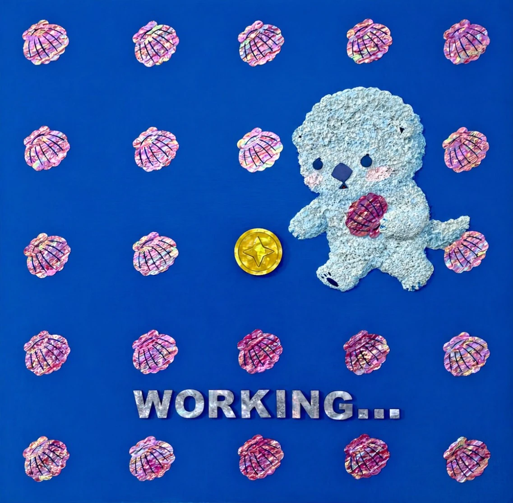

POV : 업무 중POV : Working...
POV : Working...POV : 업무 중
목심나전칠기(천연자개, 옻칠), 지태칠기(한지, 옻칠) · 53 × 53 cm · 2026Traditional Korean najeonchilgi on a wood core (natural mother-of-pearl, lacquer), traditional Korean paper-body lacquerware (hanji, lacquer) · 53 × 53 cm · 2026
얼빵해달의 직업은 조개배달부다. 매일 조개를 한 아름 안고 신해달 작가의 작업실 문을 두드린다. 작가는 그 조개로 나전칠기 작품을 만든다. 얼빵해달은 그 대가로 돈을 받는다. 영리성, 계속성, 반복성, 법이 하나의 행위를 '업(業)'으로 인정하기 위해 요구하는 세 가지 조건을, 이 작은 해달은 매일 묵묵히 충족해가고 있다. 화면을 가득 메운 자개 조개들은 하루도 빠짐없이 이어진 발걸음의 흔적이고, 그 한복판에 홀로 빛나는 금화 한 닢은 성실한 노동이 마침내 법적 언어로 번역되는 순간이다.Spaced-out Sea Otter's job is shell delivery. Every day, it knocks on artist Shin Haedal's studio door with an armful of shells. The artist turns them into mother-of-pearl lacquerware (najeonchilgi). In return, the otter gets paid. For-profit purpose, continuity, and repetition — the three conditions the law requires before an activity counts as an "occupation" — this small otter quietly satisfies, one ordinary day at a time. The mother-of-pearl shells filling the frame are the trace of footsteps that never missed a day; the single gold coin glowing at the center is the moment honest labor is finally translated into legal language.
전시 이력Exhibitions
- 2026.04.08 – 2026.04.13 처마끝에서 피어나다, 리수갤러리, 서울, 대한민국2026.04.08 – 2026.04.13 Blooming at the Eaves, Leesoo Gallery, Seoul, KR
- 2026.03.20 – 2026.03.22 언노운바이브 더블룸, 신라호텔, 서울, 대한민국2026.03.20 – 2026.03.22 Unknown vibe the bloom, Shilla Hotel, Seoul